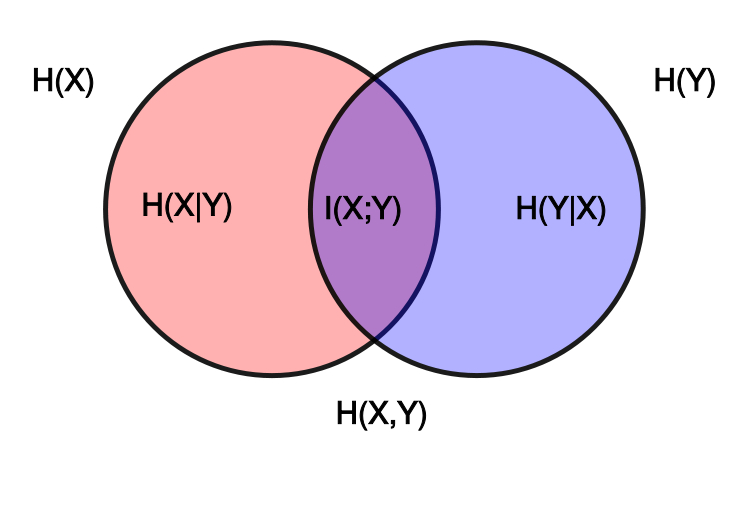

04 09 2021
Imagine that you’re a detective faced with a murder and a list of \(16\) suspects each whom is equally likely to have done it prior to you starting your investigation.
When you find a clue indicating that the culprit is a woman you can remove the \(8\) male suspects, leaving you with \(8\) female suspects. How do you quantify how much information this clue gave you? One way is to specify the fraction by which it scaled the search space, which in this case was by a half: \[\frac{1}{2}*16 = 8\] So \(\frac{1}{2}\) was the information gain. This means you need \(\frac{1}{16}\) information in total to find the murderer, i.e. to reduce the search space from \(16\) to \(1\).
Another way to specify this is to talk about how many times you require the search space be halved. In this case: \[(\frac{1}{2})^N*16 = 1 \Rightarrow N=4\] So you need \(4\) halvings.
An equivalent way of saying this is that you need \(4\) bits. The reason it makes sense to equate bits to halvings is that a bit can only take on two values, so each of \(1\) and \(0\) would exclude each their own equally sized disjoint sections of the search space (for example \(0=men\) and \(1=women\)). If you learn 1 bit of information you reduce the search space by a half.
In general if there are \(S\) suspects you need clues worth a total of \(N=\log_2{S}\) bits of information since \[(\frac{1}{2})^N*S=1 \Rightarrow (\frac{1}{2})^N=\frac{1}{S}\Rightarrow 2^N=S\] \[\Rightarrow \log_2{2^N}=\log_2{S} \Rightarrow N = \log_2{S}\]
Conversely, since \(2^N = S\) you can also think of \(N\) (the number of bits) as how many doublings you need to go from \(1\) to the size of the initial search space \(S\).
In this case the probability of a suspect being the murderer is equal to the fraction they take up in the current search space. So before any clues were discovered each on of them had a probability \(p=\frac{1}{16}\) of being guilty. After discovering the first clue the men were excluded from the search space, receiving no fraction of it (\(p=0\)), with the women receiving a bigger fraction \(p=\frac{1}{8}\) of the remaining space.
From this you can see that the more information you gain the more probability mass gets concentrated in a smaller space. When all the probability mass gets concentrated at a single point (\(p=1\) that a single person is the murderer) you’ve gained all the information you can.
In a converse way, the more information there is (to gain?) the more probability mass is spread out. This way to think about information involves considering how many times (how many bits) you need to take half the probability mass and concentrate it on another half until you end up with everything on single point.
Before finding the first clue the probability of the guilty being a woman was \(p=\frac{1}{2}\). So encountering an event that used to be \(p=\frac{1}{2}\) means now setting it to \(p=1\) by stealing all the probability mass that’s outside the event, in this case the \(\frac{1}{2}\) of mass contained in the "the murderer is a man" event.
The number of bits gained by learning a probability \(p\) fact is then equal to \[\log_2{\frac{1}{p}}=\log_2{p^{-1}}=-\log_2{p}\] Because:
\(p\) is the fraction by which you’re scaling the search space (the fraction of the space you’re cramming all the probability mass into).
\(\frac{1}{p}\) is how many times smaller the search space is (how many times smaller the space containing all the probability mass is).
The \(N\) in \(2^N=\frac{1}{p}\) is then how many times you need to cut the search space in two for it to be \(\frac{1}{p}\) times smaller (how many times you need to relocate half the probability mass to fit it all in a space \(\frac{1}{p}\) times smaller).
So \(N=\log_2{\frac{1}{p}} =\) the number of bits gained.
The expected value of a random variable \(X\) with distribution \(P\) is \[E(X)=\sum_{i}{}x_i P(x_i)\] If we treat the number of bits \(\log_2{\frac{1}{p}}\) of information gained as a random variable, then we have a probability \(p\) of gaining \(\log_2{\frac{1}{p}}\) bits of information from a random sample of this distribution.
This is what information entropy is: the expected amount of information gained from a single sample of a probability distribution (the expected number of times you need to relocate half of the probability mass to fit it all within the space of the sampled event): \[H(X)=E(\log_2{\frac{1}{p}})=\sum_{i} p_i\log_2{\frac{1}{p_i}}=-\sum_{i} p_i\log_2{p_i}\]
Here are some distributions: \[D_1=\{p_1=1\}\] \[D_2=\{p_1=0.5, p_2=0.5\}\] \[D_3=\{p_1=0.5, p_2=0.2, p_3=0.3\}\]
The entropy of \(D_1\) is \(0\) since all the probability mass is already concentrated at a single point.
The entropy of \(D_2\) is \(1\) since you you’re guaranteed to sample a \(p=0.5\) event which needs to relocate half the probability mass once to concentrated it all at a single point.
The entropy of \(D_3\) is \[0.5 \log_2{\frac{1}{0.5}} + 0.2 \log_2{\frac{1}{0.2}} + 0.3 \log_2{\frac{1}{0.3}}\approx 1.485\] If you imagine \(D_3\) as a distribution of possible clues you might discover in your murder investigation, then on average you expect learning \(1.485\) bits of information from each clue, or equivalently scaling the number of remaining suspects by a factor \((\frac{1}{2})^{1.485}\). Meaning that you would on average need a little under \(3\) clues to find the murderer (to scale the search space down to \(1\)).
There’s something peculiar about the fact that in \(p\log_2{\frac{1}{p}}\), \(p\) both determines how likely the event is and how much information you gain from observing it. But if you think back to the \(16\) suspects with equal probability of being guilty you can kind of see how information gain and probability are two sides of the same coin: the probability \(p=\frac{1}{16}\) was derived from how much space any single person took up in the search space, and how much information you gain from learning that any one person is the murderer is exactly equal to how much you scale the search space, which is exactly the how much space they take up in the search space.
This idea of scaling a search space (concentrating probability mass) is fundamentally what information is. Shannon said
The fundamental problem of communication is that of reproducing at one point either exactly or approximately a message selected at another point. Frequently the messages have meaning; that is they refer to or are correlated according to some system with certain physical or conceptual entities. These semantic aspects of communication are irrelevant to the engineering problem. The significant aspect is that the actual message is one selected from a set of possible messages. The system must be designed to operate for each possible selection, not just the one which will actually be chosen since this is unknown at the time of design.
If you have an infinite set of messages that your recipient is supposed to search through then you need an infinite number of bits to specify exactly which one you’re sending.
Being a detective trying to figure out who did it is from an information theoretical point view the same thing as understanding a message sent from your friend. Before reading the message there’s a space of possible things your friend might be meaning to communicate with you. Before finding any clues there’s a space of possible suspects who might’ve done it. When reading the message, every bit of information reduces the space by half until you’ve pinpointed to a satisfactory level of certainty what’s it’s supposed to say. When finding clues, the space of suspects reduces by half for every bit gained until it’s down to a single person.
Speaking more generally: when interfacing with the world you gain information about it (reduce the possibility space) by deleting the possible world that are incompatible with your observations. (realistically you would likely do this in a Bayesian way by updating probability distributions, with the prior space of possible worlds being a prior distribution).
The entropy of a distribution can be interpreted as a measure of how much information it contains (how much information it can give you before it runs out of information).
The conditional entropy \(H(X|Y)\) can be thought of as the information left in the distribution of \(X\) after an event \(Y\) has happened. For example the entropy remaining in the distribution of suspects after learning that the guilty is a woman.
The information gain of an event can be defined as the difference between the entropy of the distribution minus the entropy of the distribution conditioned on the event: \(IG(X|A) = H(X) - H(X|A)\). This makes sense if you think about the conditional entropy \(H(X|A)\) as being a measure of how much information is left in the distribution after the event \(A\) happened (\(IG(X|A)\) is how much information X lost and you gained). If \(A\) is a random variable (for example the answer to a yes/no question then) then you need to average over all possible values of \(A\): \[H(X|A) = P(A=yes)H(X|A=yes) + P(A=no)H(X|A=no)\]
In the binary search algorithm you gain \(1\) bit of information about the position of what you’re searching for in each iteration thus making it have runtime \(O(\log_2{N})\) since that’s how many times you have to half the search space.
The entropy of a uniform distribution with \(N\) events is \(\log_2{N}\) for the same reason you need \(\log_2{N}\) bits of worth of clues to find a murderer out of \(N\) equally suspicious suspects.
A dictionary with symbols whose frequency follows some probability distribution is more difficult to compress the higher the entropy of the distribution, i.e an optimal encoding of the symbols requires more bits on average to transmit a message constructed from the dictionary.
When training decision trees a nice strategy is to place yes/no questions on each branch that maximize the expected information gain \(IG(X|question)\) given a probability distribution of \(X\) defined by frequencies of features in the training data. This means you should ask questions that tends to continuously bisect the training data.
Joint entropy is the entropy analogue of a joint distribution. \[H(X,Y) = H(X) + H(Y|X) = H(Y) + H(X|Y)\] Which if \(X\) and \(Y\) are independent is \(H(Y) + H(X)\) since \(H(X|Y) = H(X)\). This makes sense because independence means you shouldn’t gain any information about the one when learning about the other. The information entropy left in \(X\) after conditioning on \(Y\) is the same as before conditioning.
The mutual information \(I(X;Y)\) of \(X\) and \(Y\) is the information that’s contained in both \(X\) and \(Y\). This means you learn \(I(X;Y)\) both when you learn \(X\) and when you learn \(Y\). \(H(X|Y)\) is the information left in \(X\) after learning \(Y\) so \(H(X|Y) = H(X) - I(X;Y)\) since \(I(X;Y)\) is the information you can learn about \(X\) from learning about \(Y\).
This diagram shows the additive relationships between different entropy related quantities of two variables.  From which you can also deduce for example that \[I(X;Y) = H(X,Y) - H(X|Y) - H(Y|X)\]